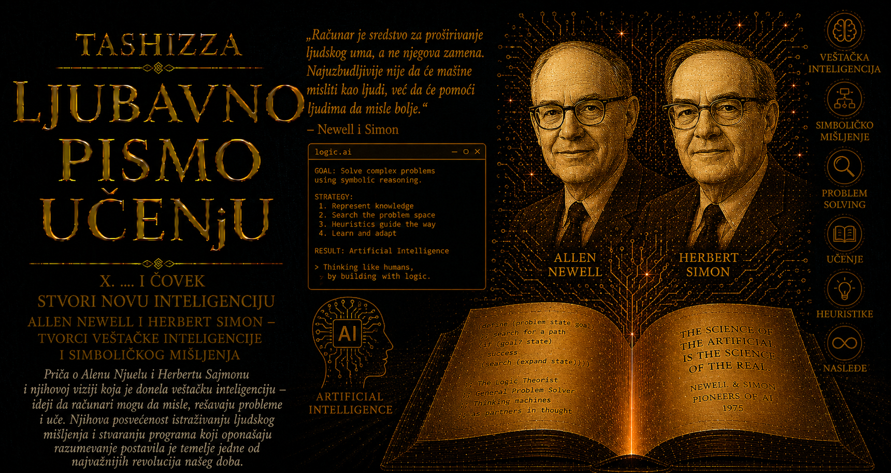

Ljubavno pismo učenju

Sredinom pedesetih godina dvadesetog veka računari su već dokazali da mogu brže od čoveka izvoditi složene proračune, obrađivati velike količine brojčanih podataka i neumorno ponavljati precizno određene operacije. Između takve računarske moći i ljudskog mišljenja ipak se pružao ogroman prostor. Mašina je sledila unapred zapisane instrukcije, dok je čovek umeo da bira među mogućim putevima, odbacuje besplodne pokušaje, postavlja pomoćne ciljeve i menja pristup kada se početna zamisao pokaže neuspešnom. Allen Newell i Herbert Simon prepoznali su da se jedna od ključnih osobina inteligencije nalazi upravo u toj sposobnosti usmeravanja pažnje kroz mnoštvo mogućnosti.
Njihova zamisao bila je izuzetno smela: proces mišljenja može se proučavati tako što će biti opisan dovoljno precizno da ga računar izvrši. Program bi tada imao dvostruku ulogu. Istovremeno bi rešavao zadatak i predstavljao proverljivu teoriju o postupku kojim se do rešenja dolazi. Istraživači bi mogli da ga pokrenu, posmatraju njegove odluke, izmene određeno pravilo i ustanove kako ta promena utiče na njegovo ponašanje. Teorija o mišljenju postajala je operativni model čiji se nedostaci više nisu mogli prikriti neodređenim pojmovima.
Newell je u istraživačkom okruženju korporacije RAND proučavao organizaciju informacija, složeno odlučivanje i način na koji ljudi biraju postupke kada pred sobom imaju veliki broj mogućnosti. Simon je već izgradio teoriju ograničene racionalnosti, prema kojoj ljudske odluke nastaju unutar granica vremena, znanja, pažnje i sposobnosti predviđanja. Njihovi pogledi susreli su se u zajedničkom pitanju: od kojih se postupaka sastoji ljudsko rešavanje problema i mogu li se ti postupci izraziti pravilima koja će mašina zaista moći da primeni?
Prvo veliko ostvarenje te zamisli bio je Logic Theorist, razvijen uz presudan doprinos programera Johna Clifforda Shawa iz RAND-a. Za područje istraživanja izabrali su simboličku logiku, jer je ona nudila jasno određene početne pretpostavke, dozvoljene operacije i ciljeve. Program je dobijao aksiome i pravila zaključivanja, a zatim je tražio niz simboličkih preobražaja koji vodi do zadate teoreme. Dokazivanje se tako moglo predstaviti kao kretanje kroz prostran skup mogućih zaključaka.
Veličina tog prostora predstavljala je osnovnu teškoću. Čak se i u strogo uređenoj matematičkoj logici broj mogućih primena pravila umnožavao tolikom brzinom da potpuno ispitivanje svih puteva nije bilo praktično. Newell, Simon i Shaw zato su u program uneli heuristike, iskustvena pravila koja pomažu da se najpre istraže obećavajući pravci. Heuristika ne obećava najkraći put niti garantuje uspeh, ali ume da usmeri pažnju, odloži manje korisnu mogućnost i prekine traganje granom koja ne pokazuje napredak. Inteligentno ponašanje prvi put je dobilo računarski oblik kroz promišljeni izbor redosleda kojim se mogućnosti ispituju.
Logic Theorist dokazao je trideset osam od prve pedeset dve teoreme iz drugog poglavlja dela Principia Mathematica Alfreda Northa Whiteheada i Bertranda Russella. Za pojedine teoreme pronašao je puteve drugačije od objavljenih dokaza, a jedan od njegovih postupaka bio je elegantniji od rešenja u knjizi. Istorijski značaj tog rezultata prevazilazio je broj uspešnih dokaza. Program je pokazao da se deo delatnosti povezane sa izborom, rasuđivanjem i matematičkom domišljatošću može izraziti kao uređeno manipulisanje simbolima, usmereno ciljem i vođeno heurističkim pravilima.
Da bi program takve vrste uopšte mogao da bude napravljen, bilo je potrebno razviti nove programske alate. Jezici toga vremena bili su prvenstveno prilagođeni numeričkim proračunima, dok je Logic Theorist morao da obrađuje promenljive strukture sastavljene od simbola, izraza, pravila i međusobno povezanih koraka dokaza. Newell, Simon i Shaw razvili su Information Processing Language, poznat kao IPL, jedan od prvih jezika namenjenih obradi lista i simboličkih struktura.
Liste su omogućavale programu da tokom rada gradi, proširuje i preuređuje složene veze među podacima. Simbolički izraz više nije morao da bude smešten u nepokretno polje unapred određene veličine, jer je mogao postati deo strukture koja se menja zajedno sa tokom rešavanja problema. Obrada simbola, stabla pretrage, hijerarhije ciljeva i dinamički organizovana memorija postali su osnovni građevni materijal rane veštačke inteligencije. Lisp će kasnije razviti sopstveni, izuzetno uticajan pristup listama, ali se pojavio u istraživačkom svetu čijem je oblikovanju IPL već snažno doprineo.
Posle uspeha programa namenjenog simboličkoj logici Newell i Simon postavili su šire pitanje: mogu li isti principi voditi rešavanje različitih vrsta problema? Odgovor su tražili kroz General Problem Solver, odnosno GPS. Program je trebalo da dobije opis početnog stanja, željenog cilja i raspoloživih operacija, a zatim da samostalno organizuje potragu za rešenjem. Njegovo ambiciozno ime izražavalo je nadu da iza različitih ljudskih zadataka postoji zajednička struktura mišljenja.
U osnovi GPS-a nalazila se analiza sredstava i ciljeva. Sistem bi uporedio trenutno stanje sa željenim, izdvojio najvažniju razliku i izabrao operaciju koja bi tu razliku mogla da smanji. Kada uslovi za primenu operacije nisu bili ispunjeni, pretvarao ih je u nove podciljeve. Veliki zadatak tako se rastavljao na manje, međusobno povezane teškoće. Ukoliko bi odabrani put završio preprekom, program se vraćao i ispitivao drugu mogućnost. U tom postupku pojavili su se rani i jasno oblikovani oblici planiranja, postavljanja podciljeva, povratnog pretraživanja i procenjivanja napretka.
Newell i Simon želeli su da njihovi programi objasne način na koji ljudi rešavaju probleme, pa im podudarnost konačnih odgovora nije bila dovoljna. Od ispitanika su tražili da tokom rešavanja zadatka naglas opisuju šta primećuju, koju mogućnost razmatraju, zbog čega menjaju smer i gde nailaze na prepreku. Takvi verbalni protokoli omogućavali su poređenje ljudskih misaonih koraka sa radom programa. Računar je postao laboratorijski instrument kognitivne nauke, a psihološka teorija dobila je zahtev da bude dovoljno precizna za pretvaranje u postupak koji se zaista može izvršiti.
Iz njihovog istraživačkog programa razvila se predstava čoveka i računara kao sistema za obradu informacija. Znanje se moglo predstaviti simbolima, postupci pravilima, a rešavanje problema pretragom kroz prostor mogućih stanja. Newell i Simon ovu ideju kasnije su saželi u hipotezi fizičkog simboličkog sistema, prema kojoj sistem sposoban da stvara, povezuje, menja i tumači simboličke strukture poseduje osnovne mehanizme potrebne za opšte inteligentno delovanje. Ta hipoteza postala je jedna od najuticajnijih i najviše osporavanih tvrdnji u istoriji veštačke inteligencije.
Trag njihovog rada širio se kroz Carnegie Mellon, RAND i novu međunarodnu zajednicu istraživača okupljenu oko veštačke inteligencije i kognitivne nauke. Pretraga problemskog prostora, heurističko usmeravanje, eksplicitno predstavljanje znanja i produkciona pravila pojavili su se u programima za dokazivanje teorema, igranje igara, planiranje, razumevanje jezika i rešavanje stručnih zadataka. Sedamdesetih i osamdesetih godina ekspertski sistemi povezali su deo ovog nasleđa sa velikim zbirkama znanja iz medicine, hemije, geologije i računarske tehnike.
Posebna vrednost simboličkih sistema nalazila se u mogućnosti da njihova pravila i zaključci budu vidljivi ljudskom stručnjaku. Sistem je često mogao da pokaže kojim se pravilom poslužio, koje činjenice je uzeo u obzir i kako je stigao do preporuke. Takva objašnjivost ostala je dragocena u oblastima u kojima odluka mora biti obrazložena, proverena ili osporena. Savremena istraživanja ponovo otkrivaju njen značaj dok pokušavaju da moć statističkog učenja povežu sa pouzdanim rasuđivanjem, planiranjem i proverom rezultata.
Newell je potragu za opštom organizacijom inteligencije nastavio kroz kognitivne arhitekture, među kojima je najpoznatiji Soar, razvijan sa Johnom Lairdom, Paulom Rosenbloomom i drugim saradnicima. Simon je kroz ekonomiju, psihologiju, teoriju organizacije i računarske modele nastavio da proučava odlučivanje, pažnju, stručnost i stvaralačko otkriće. Njihov zajednički početak prerastao je u dugotrajan istraživački program čiji je cilj bio da objedini različite oblike mišljenja unutar modela dovoljno širokog da obuhvati više sposobnosti i dovoljno preciznog da se njegovi koraci mogu proučavati.
Granice prvih sistema pojavile su se upravo tamo gde je njihova početna elegancija delovala najprivlačnije. Opšte heuristike davale su dobre rezultate u malim i jasno uređenim problemskim svetovima, dok ih je složenost svakodnevnog iskustva brzo preplavljivala. Program je mogao posedovati razuman način pretraživanja, a ipak ostati nemoćan jer ne zna dovoljno o predmetu kojim se bavi. GPS nije postao univerzalni rešavač svih problema, ali je njegov neuspeh doneo važno saznanje: inteligencija zavisi od sadržaja znanja, načina predstavljanja problema, iskustva, konteksta i sposobnosti učenja podjednako kao od opštih pravila rasuđivanja.
Kasniji razvoj veštačke inteligencije okrenuo se bogatijim predstavama znanja, probabilističkom zaključivanju, učenju iz podataka i neuronskim mrežama. Savremeni modeli stiču mnoge sposobnosti kroz učenje velikog broja parametara iz primera, umesto neposrednim zapisivanjem svakog pravila. Ipak, složeni sistemi i dalje moraju da procenjuju naredne korake, razlažu ciljeve, pretražuju alternative, koriste memoriju i proveravaju predložena rešenja. Pitanje kako ograničiti prostor mogućnosti, postavljeno pred veoma skromnim računarima pedesetih godina, ostalo je jedno od osnovnih pitanja inteligentnog računanja.
Newellovo i Simonovo delo unelo je u nauku zahtev da svaka ozbiljna tvrdnja o mišljenju bude povezana sa objašnjivim mehanizmom. Pojmovi kao što su razumevanje, uvid i razuman izbor morali su dobiti jasniju unutrašnju strukturu. Trebalo je objasniti šta sistem opaža, kako predstavlja cilj, kojim operacijama raspolaže, kako bira sledeći korak i pod kojim uslovima napušta pogrešan put. Program je postao oblik naučnog argumenta: njegovo izvršavanje otkrivalo je da li je teorija potpuna i gde se u njenom objašnjenju krije praznina.
Logic Theorist i General Problem Solver nisu dali završni model ljudskog uma, ali su mišljenje pretvorili u predmet gradnje, eksperimenta i kritičkog ispitivanja. Pokazali su da se inteligencija može proučavati kroz predstavljanje znanja, izbor među alternativama, heurističku pretragu i stvaranje podciljeva, dok su njihove teškoće istovremeno otkrile neizmernu složenost ljudskog iskustva. Upravo u tom spoju uspeha i ograničenja nalazi se njihova trajna naučna vrednost.
Bez njihovog poduhvata računarski svet bi verovatno još dugo ostao podeljen između mašina koje računaju i nauka koje opisuju mišljenje. Newell, Simon i Shaw izgradili su jedan od prvih čvrstih mostova između ta dva sveta. Preko njega su prešli simbolička veštačka inteligencija, kognitivna nauka, heurističko programiranje, automatsko zaključivanje i generacije sistema koji traže put kroz nepregledan prostor mogućnosti. Njihovo nasleđe živi u uverenju da se mišljenje može pažljivo rastaviti, formalizovati i delimično ponovo sastaviti u radu mašine, pri čemu svaki uspeh tog poduhvata istovremeno osvetljava domet računara i zadivljujuću dubinu ljudskog uma.